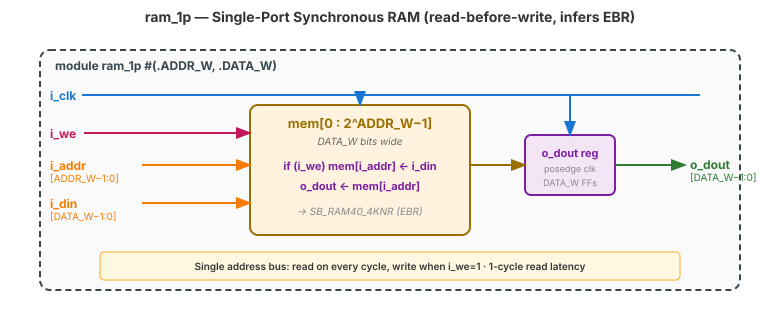
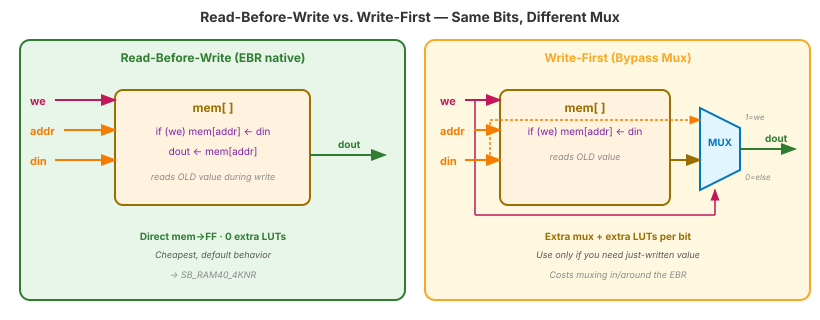
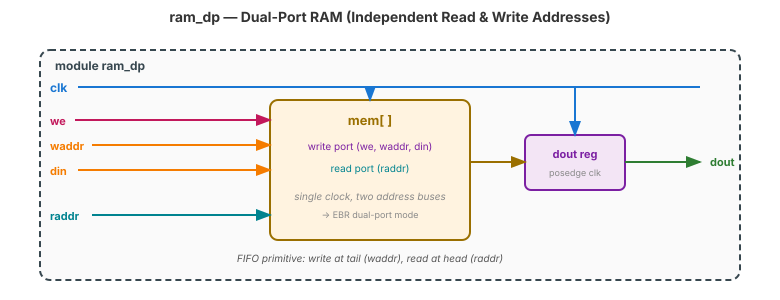

Video 2 of 4 · ~10 minutes
Dr. Mike Borowczak · Electrical & Computer Engineering · CECS · UCF
Every CPU has an L1 cache (SRAM). Every network switch has packet buffer memory. Every GPU has a texture cache and a command FIFO. Every UART has a TX and RX FIFO. Every GoPro has a frame buffer. RAM-on-chip is the fastest memory in the system, and on-chip RAM is what block RAM models. Designs live or die by how well they manage it.
Your Topic 8 FIFO stored data internally — you'll re-write it with proper block RAM inference. Your Topic 11 UART TX FIFO uses this pattern. Your Topic 12 SPI buffer does too. Your capstone frame buffer (if you do video) is a block RAM. This is the memory you'll actually use.
“Any reg [N-1:0] mem [0:M-1] becomes a block RAM. The tool figures it out.”
Block RAM inference has strict rules. Memory must have: (1) exactly one clock, (2) synchronous writes, (3) synchronous reads with a registered output, (4) no async reset on the memory array itself, (5) no weird operations (can't partial-width-write half a word, etc.). Break any rule → LUT RAM or scattered logic. Worth checking the tool output every time.
module ram_1p #(
parameter ADDR_W = 10, // 1024 entries
parameter DATA_W = 8
) (
input wire i_clk,
input wire i_we, // write enable
input wire [ADDR_W-1:0] i_addr,
input wire [DATA_W-1:0] i_din,
output reg [DATA_W-1:0] o_dout
);
reg [DATA_W-1:0] mem [0:(2**ADDR_W)-1];
always @(posedge i_clk) begin
if (i_we) mem[i_addr] <= i_din; // sync write
o_dout <= mem[i_addr]; // sync read (RBW)
end
endmodule
When we=1 and you're reading the same addr you're writing, what comes out of dout?
always @(posedge clk) begin
if (we) mem[addr] <= din;
dout <= mem[addr]; // OLD
endReads the old value. Natural EBR. Cheapest.
always @(posedge clk) begin
if (we) begin
mem[addr] <= din;
dout <= din; // NEW
end else dout <= mem[addr];
endReads the new value just written. Bypass mux required.

What does a dual-port (one read, one write, independent addresses) RAM look like? Sketch the ports and the always block.
module ram_dp (
input clk,
input we, input [A-1:0] waddr, input [D-1:0] din,
input [A-1:0] raddr, output reg [D-1:0] dout
);
reg [D-1:0] mem [0:(2**A)-1];
always @(posedge clk) begin
if (we) mem[waddr] <= din;
dout <= mem[raddr];
end
endmodule
~5 minutes
▸ COMMANDS
cd lecture_examples/week3_day09/d09_s2_ex2/
cat ram_1p.v
make sim # self-check write/read
make wave
make stat # look for SB_RAM40_4K▸ EXPECTED STDOUT
PASS: write 42 @ addr 0
PASS: read 42 @ addr 0 (1 cycle later)
PASS: write cycles don't affect
other addresses
=== 64 passed, 0 failed ===
SB_RAM40_4K: 2 ← 2 EBRs used▸ GTKWAVE
Signals: i_addr · i_din · i_we · o_dout. Note the 1-cycle read latency — address in at cycle N, data out at cycle N+1. That delay is the price of block-RAM-grade density.
$ yosys -p "read_verilog ram_1p.v; synth_ice40 -top ram_1p; stat" -q
=== ram_1p === # 1024 × 8 = 8 Kbit
Number of wires: 21
Number of cells: 3
SB_DFFE 8 ← output register (the 'o_dout' reg)
SB_RAM40_4KNR 2 ← 2 EBRs with "N"on-registered read
configured for read-before-writeSB_RAM40_4KNR — the non-read-registered variant — because your o_dout register already provides the output flop. If you'd registered the read inside the EBR too, you'd have an extra unnecessary flop. Tools are smart; idiomatic code lets them be smart.
Ask AI: “Write a dual-port 512×16 block RAM in Verilog. It should infer block RAM on iCE40 (check by running yosys synth_ice40).”
TASK
AI writes dual-port RAM with BRAM inference.
BEFORE
Predict: two address ports, single clock, sync read+write.
AFTER
Strong AI writes one always block, single clock. Weak AI may try two clocks — doesn't infer iCE40 EBR.
TAKEAWAY
Verify with make stat. SB_RAM40_4K must appear.
① Block RAM inference = one clock + sync write + sync read + registered output.
② Read has 1-cycle latency. Plan pipelines around it.
③ Read-before-write is cheap. Write-first costs extra muxing.
④ Dual-port RAMs are the FIFO primitive. iCE40 EBRs support native dual-port.
make stat for SB_RAM40_4K. If it's missing, inference failed.🔗 Transfer
Video 3 of 4 · ~8 minutes
▸ WHY THIS MATTERS NEXT
You now know the patterns. Video 3 shows the resource budget for your actual chip: 16 Embedded Block RAMs (EBRs) at 4 Kbit each, configurable in 5 different aspect ratios. You'll learn to plan memory usage for real designs — UART FIFO, character ROM, frame buffer, sine table — and see what fits.